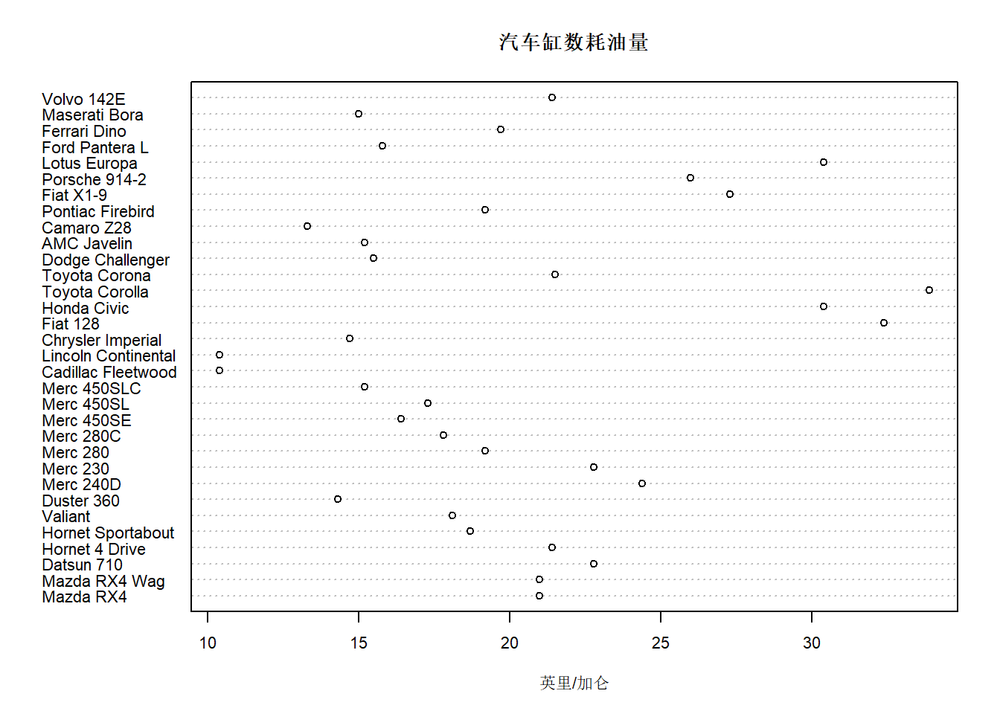
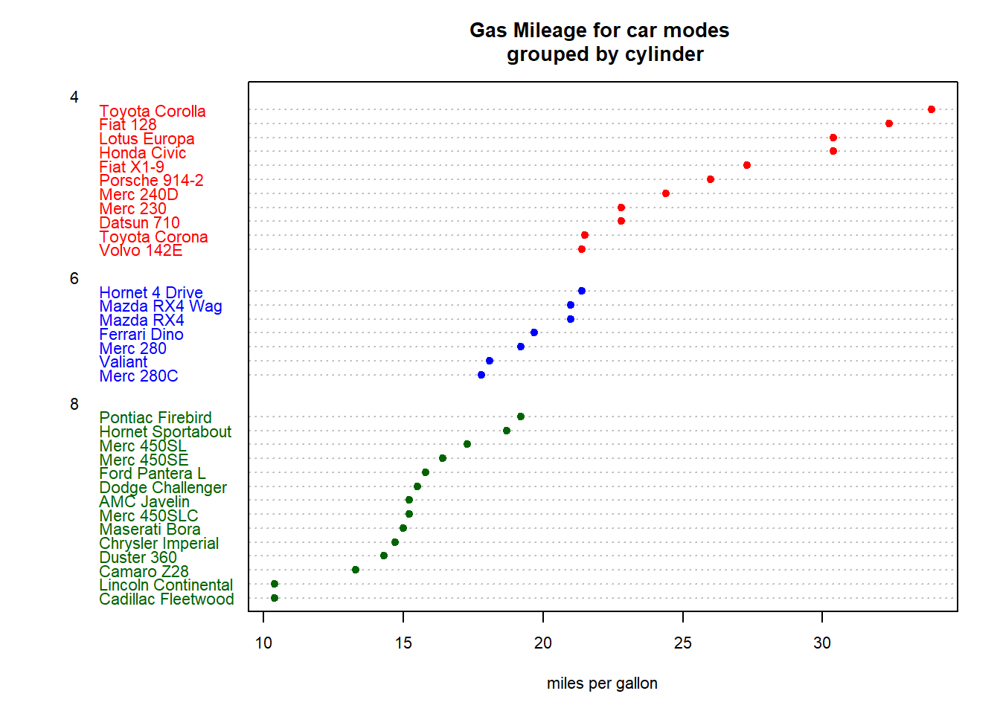

选择统计了丰田、大众、宝马等不同品牌的主要车型，以下为初步统计结果散点图（纵轴为车型及汽缸数量，横轴为每加仑油可行驶里程数）。
dotchart(mtcars$mpg,labels = row.names(mtcars),cex = .7, main = "汽车缸数耗油量",xlab = "英里/加仑") 经过观察发现这些数据过于凌乱不够直观，希望这个图能够经过排序，按照油缸数（cyl）进行分组并且用不同的颜显示，具体操作如下：
x <- mtcars[order(mtcars$mpg),]
x$cyl <-factor(x$cyl)
x$color[x$cyl==4] <-"red"
x$color[x$cyl==6] <-"blue"
x$color[x$cyl==8] <-"darkgreen"
dotchart(x$mpg,
labels = row.names(x),
cex = .7,
groups = x$cyl,
gcolor = "black",
color = x$color,
pch = 19,
main = "Gas Mileage for car modes \n grouped by cylinder",xlab = "miles per gallon")  自动将这些车型分为了4缸、6缸和8缸，我们可以非常直观地看出汽缸数量越多耗油量越大，每加仑油可行驶里程数越短。但这些耗油量高的车型基本都是高端车型，自然有钱也不会这些啦！